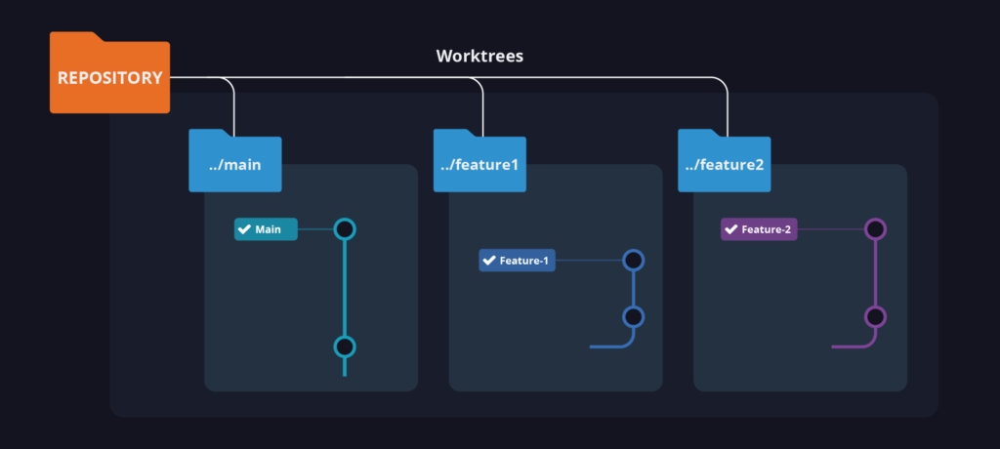

Switching Development Contexts with Git
Switching Development Contexts with Git¶

Context¶
On my daily work I have to switch context while in the middle of a modification many times,
or I just have to work on two different versions in parallel.
Working with git there are many ways to save your work and come back later,
but I have found all of them too cumbersome in the process to resume work.
I do not need this, I already have stash to save my work!¶
Yeah you can stash your work and checkout a new branch
but stash is not very user friendly and
if you spend too much time in your new task
you will have a hard time remembering wich stash element was the good one
unless you have a really strict naming policy while stashig things …
which, to he honest most of us do not have in our daily work, so let alone when we are in a hurry.
Well, I really do NOT need this cause I use WIP commits …¶
Sure, you can commit your progress with some kind of wip label and checkout a new branch
but that would mostly result in you having to move changes around between commits
to tidy up your changes in small and meaningfull commits before committing the final work
… and still there is the problem with checkout¶
Both of the above systems rely in save your work somehow and
checkout a new branch to star working in the new urgent task.
That usually works fine but … what if your new branch is an old maintenance branch
and your project layout or your build system had changed … ?
Well your IDE will probably freak out and you will end having to deal with
a bunch of errors in your indexer,
openned files which do not exist anymore …
you probably know what I mean
How worktree works¶
worktree is a git command. It allows you to create more than one working tree for each repository.
Normally each repo has one main working tree (maybe zero on bare repos but they are out of scope here),
and zero or more linked working trees.
worktree will allow you to checkout a new or already existing branch in a new folder,
that way you can switch between them with zero effort.
… but I already can clone the repo multiple times, so no big deal!¶
Ok, yes. You already can clone a git repo on different folders
and you would have something very similar to the scenario above.
In fact that was my former approach to the problem.
So what makes learning to use worktree worthy?¶
Well, first of all make a new repo clone takes disk space, sometimes a lot of disk space.
As worktrees are not new clones but just linked workingtrees of a main repo,
they share most of the “administration” info with your main working tree.
Another improvement of worktree over multiple clones is in fact a “limitation” that worktree impose on us
but that I have found quite useful to avoid errors.
worktree does NOT allow us to have more than one workingtree pointing to the same branch at the same time.
This will help us to avoid headaches having more than one way to modify the content of a branch.
Finally, being a git command worktree provides useful commands to list, add and delete workingtrees
and so having them under control from a central point.
Some IDEs already have support for working trees also.
Use cases¶
I have found worktree command most useful when:
- Working on two different PRs and have to switch between then to address comments
- I have to solve bugs or test something on old maintenance versions
Brief commands reference¶
Create a new working tree and a new branch from the current point.¶
Create a new working tree from an existing branch¶
List all the existing working trees¶
Links and more info¶
- Official docs for
worktree: https://git-scm.com/docs/git-worktree/2.35.0 - An StackOverflow thread with some additional info regarding commands https://stackoverflow.com/a/45491767
Bonus track: How I layout my workingtrees¶
- Create a new folder with the project name
- Clone the
main(ormasterif you still live in the old good days) in its own folder
$> cd awesomeProject
awesomeProject$> git clone git@github.com:jlojosnegros/awesome-project.git main
- From there you could create your new workingtrees to work on your features using sibling folders
awesomeProject$> cd main
awesomeProject/main[main {origin/main}]$> git worktree list
~/awesomeProject/main d4f9c34 [main]
awesomeProject/main[main {origin/main}]$> git worktree add -b newAwesomeFeature ../new-awesome-feature
Preparing worktree (new branch 'newAwesomeFeature')
HEAD is now at d4f9c34 My first and last commit
awesomeProject/main[main {origin/main}]$> git worktree list
~/awesomeProject/main d4f9c34 [main]
~/awesomeProject/new-awesome-feature d4f9c34 [newAwesomeFeature]
awesomeProject/main[main {origin/main}]$> cd ../new-awesome-feature
awesomeProject/new-awesome-feature[newAwesomeFeature {L}]$>
TL;DR¶
TBD